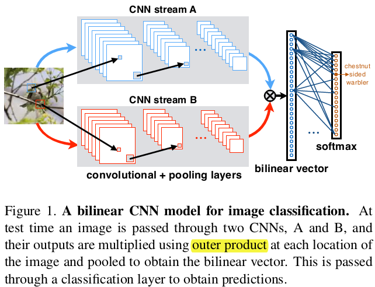
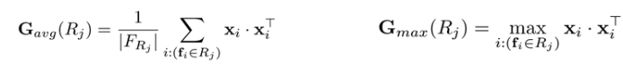

Bilinear Pooling
出自文章’Bilinear CNN Models for Fine-grained Visual Recognition’ ECCV 2015’
文中，使用Bilinear Pooling 融合两个CNN提取的特征，实际上算是一个特征融合模块
方法

上图展示了 Bilinear Model（猜测这个Bilinear 指的就是两个CNN或者说得到的两个feature map）
$f_A, f_B$分别表示两个特征提取的模块（上图中就是两个CNN），在文中，认为$f_A, f_B$都是提取的图像的局部特征（存疑，上图中明明是直接送的全部的图像）
对于图像$I$在位置$l$的两个特征（注意是对应同一个位置的两个提取器提取的特征）$f_A(I,l)\in R^{C\times M}$和$f_B(I,l)\in R^{C\times N}$，进行如下操作：
$$
B(I,l,f_A,f_B)=f_A^T(I,l)f_B(I,l), \qquad \in R^{M\times N}|\; 注意这里是\;matrix\;outer\; producted\
\Phi (I)=\sum_{l\in I}B(I,l,f_A,f_B), \qquad \in R^{M\times N}|\; 其实这里有点类似mvcnn中的view\; pooling，\
x = sign(x)\sqrt{(|x|)},\qquad \in R^{MN\times1}|\; 此操作之前先将矩阵reshape成向量\
z = y/||y||^2, \qquad \in R^{MN\times1}|\; z为最终的特征输出，直接拿去分类
$$
- 其实，上面公式中的第二步，相当于pooling操作，文中采用的是sum，其实也可以采用average或者max等
- 注意第二步是对全图所有位置提取的特征做的aggregate
注意
上面说到的两个特征维度，分别是$C\times M, C\times N$，或许有如下几种理解：
- M，N表示channel，C=1，此时得到的这两个特征就是CNN最后通过FC层提取的特征，是一个向量；那么后面的matirx outer product 就变成了向量的outer producted
- (自己瞎猜的一种)M表示feature map的h，N表示w，即对应通道的feature map进行上面第一步计算，然后再pooling的时候考虑所有的通道。
Second-order Pooling
- 出自ECCV2012文章’Semantic segmentation with second-order pooling’，文中对Second-order Pooling定义为：

- 由于Second-order Pooling用到了特征$\bf{x}$的二阶信息，所以在一些任务下能比一阶信息表现更为优秀。
- 显然，和Bilinear Pooling进行对比，可知当$f_A=f_B$的时候，二者等价，也就是说二阶池化(Second-order pooling)=同源双线性池化(HBP, Homogeneous Bilinear Pooling)
- 同源双线性池化：即在双线性池化中，$f_A=f_B$的情况。